Image quality: Image histogram#
Topics: intensity sampling, image quality, image histogram
Learning objective#
The learner should be able to use image histograms to identify intensity sampling artifacts in images.
Time needed: 25 min
Motivation#
A digital light microscopy image is a measurement of a biological object including its light intensity. Intensity measurement can be performed incorrectly and thus degrade the captured information.
In this mini tutorial, we discuss how to use image histograms to check whether a digital image has sufficient intensity-measurement quality for visualization.
Key considerations#
Is oversaturation or clipping present at maximum intensity?
Is the minimum signal properly sampled?
Are there any intensity sampling artifacts?
Materials#
This brief tutorial uses Fiji (Fiji Is Just ImageJ). All images can be downloaded on the page.
Fiji download: https://fiji.sc/ tested with Version ImageJ 2.18.0/1.54p; Java 21.0.7 (64-bit)
Introduction#
Light microscopy images in life sciences represent a measurement of a biological object, for instance, a cell. In light microscopy, or more specifically for the example we use, fluorescent light microscopy, the cell is measured over:
Space
Time
Fluorescent labels
Intensity
The spatial dimension is represented as pixels in 2D or voxels in 3D volumes. The time dimension is present either as a single timepoint or as multiple frames in a timelapse. The fluorescent labels are represented as different channels.
Finally, the light intensity that the microscope captures is represented as different shades of gray of each pixel or voxel. This sampling is illustrated in Fig. 87.

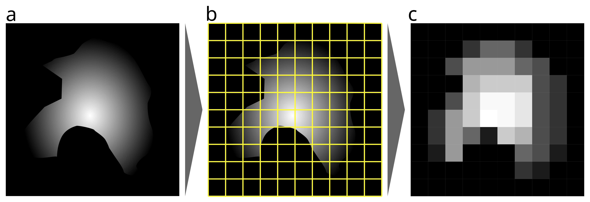
Fig. 87 Illustration demonstrating digital sampling in space and intensity. (a) Illustration of a real object, e.g., a cell, with a smooth, continuous outline and continuous intensity within. (b) A modern microscope samples this signal (yellow grid lines) and transforms (quantizes) it into a digital representation, thus quantizing the continuous analog information into discrete pixels and gray values. (c) The sampled cell as a digital image; note the clear loss of information due to this digital sampling.#
Think about it
The above example is extreme to illustrate a point. However, image acquisition always means some loss of information. Can you think of why this is unavoidable?
Intensity signals are continuous information and thus have infinite fine detail. In order to store such information, we need to convert this information into a different form. In the past, we used analog storage media such as film for images.
Now we use digital storage media. The continuous and “infinite” information is converted to discrete and thus finite gray value.
Why should you care about that? See below how different numbers of gray values influence how well we can differentiate detail in an image Fig. 88:

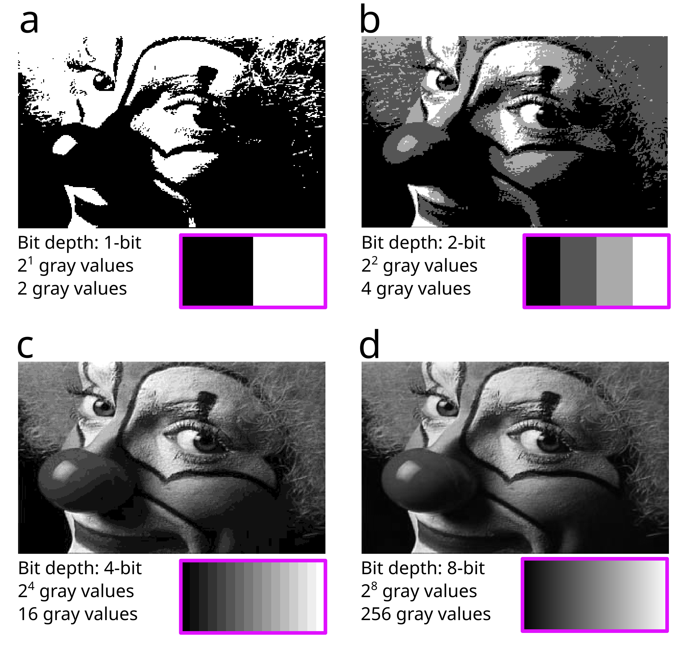
Fig. 88 Visualization of different intensity sampling on a Fiji sample image. (a) Two gray values are available. (b) Four gray values. (c) Sixteen gray values. (d) 256 gray values.#
Think about it
The 1-bit image looks bad, and the face is very hard to recognize. The 2-bit image is better, and the 4-bit image is already quite good, but there are still clear stepping artifacts. The 8-bit image and the gradient below appear continuous.
Would 8-bit therefore be sufficient in terms of gray values for all applications? Can you think of cases when this would be sufficient, and when it would be a problem?
The conversion of the continuous signal into gray values via intensity sampling can also be performed incorrectly, or the images can be processed incorrectly afterward, negatively impacting analysis and image visualization. For instance:
The image can be oversaturated, clipping high intensities.
The offset can be set incorrectly, cutting off minimum intensities.
Image intensity can be resampled (e.g., converted to a lower bit depth), changing the intensity distribution.
We can check these artifacts using the image itself, but often they are not easily visible. See Fig. 89:

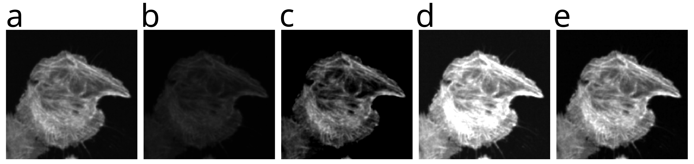
Fig. 89 Images demonstrating different intensity sampling problems. (a) The starting image, an F-actin cytoskeleton stain channel of a cell cluster. (b-e) Different intensity sampling problems introduced into the same image.#
Exercise
Can you identify the intensity sampling problems in each of b-e? You can find the solution at the end of the tutorial, or work through the exercise yourself using histograms.
Creating an Image Histogram#
We can use tools such as image histograms to easily spot intensity sampling problems.
Download the first test image here a_image.png (right-click and select “Save Link As…”).

Open Fiji.

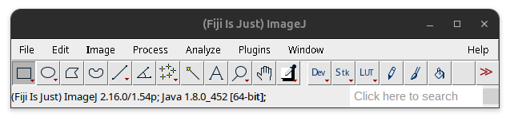
Fig. 90 Fiji task bar#
File > Open… (or drag and drop image into Fiji task bar).
You can then create the image histogram of this image here:
Analyze > Histogram (Ctrl + H; Mac: ⌘ + H)

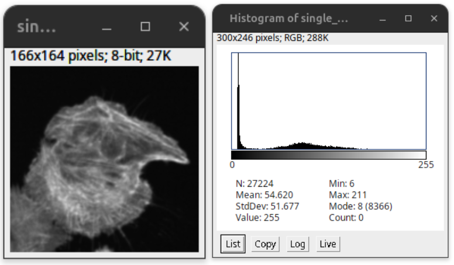
Fig. 91 Image Histogram: the number of pixels (y-axis) is plotted over the gray values (x-axis).#
The image histogram shows the intensity distributions over all pixels (black plots), with the x-axis plotting the gray values and the y-axis plotting the number of pixels Fig. 91.

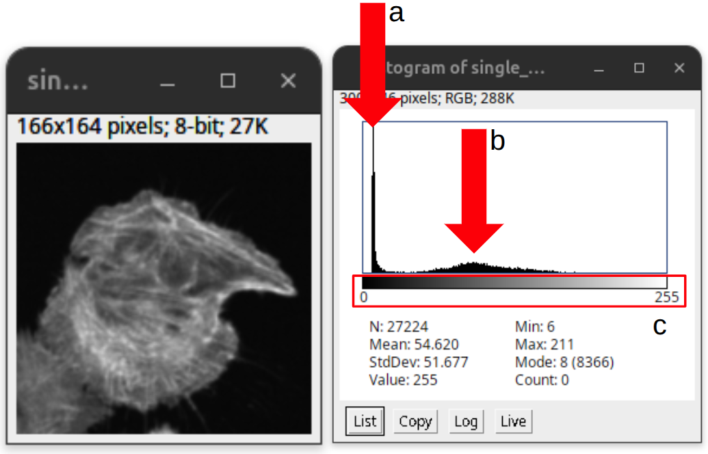
Fig. 92 Information in the histogram: (a) The dark pixels of the background (note the offset). (b) The higher gray values of the signal that are distributed over a larger gray value range. (c) The entire range of gray values currently visualized in the display. Since it is an 8-bit image, the entire bit range of the image is displayed.#
There are two peaks, see Fig. 92. (a) The first sharp peak has many pixels with low gray values. These values correspond mostly to the background of the image (e.g., dark pixels). (b) The second flatter peak shows pixels with a wide distribution over different larger gray values. These correspond to the signal from the imaged object. (c) Below you will find a calibration bar that shows the minimum and maximum values displayed and their corresponding displayed gray value.
Additionally, the histogram window shows basic intensity statistics from this specific image such as the total number of pixels (N), mean (Mean), standard deviation (StdDev), minimum value (Min), and maximum value (Max). For more information, please look into the ImageJ documentation.
The second peak is often not easily visible. Thus, we can apply a log scale on the y-axis to better visualize the less abundant gray values. The intensity distribution using the log scale is overlaid as gray plots, see Fig. 93:

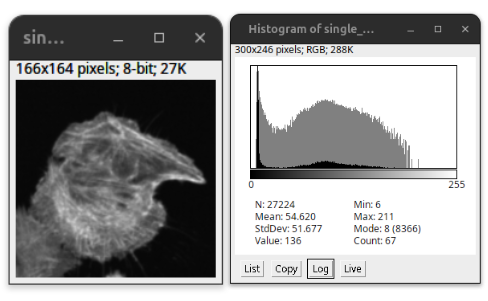
Fig. 93 Histogram with log scale#
Now we would like to understand what constitutes a well-acquired image based on its histogram. In general, good original microscopy images preserve both the low and high intensity values and show a varying signal. We can see this clearly in Fig. 94:

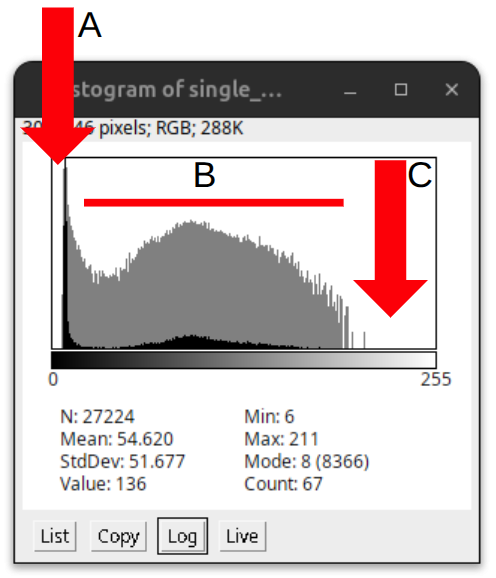
Fig. 94 An example showing the hallmarks of a well-acquired image: (a) Offset. (b) Varying signal with more or less continuous signal distribution. (c) The highest signal falls within the upper third of the gray value range but does not reach the maximum value.#
(a) Low values do not start at 0; there is a clear “offset” present in the image, with low intensity varying around a low gray value. (b) The signal is continuous but not smooth; variation is present along the intensity distribution due to variation in the signal and noise. (c) The high values end before the highest possible value, rather than reaching it.
Note
Variation and noise are often seen as something bad that should be suppressed or removed before analysis. However, in the physical world, variation is normal and noise cannot be avoided when performing measurements, as the measurement itself will introduce it. Thus, the absence of variation or noise, i.e., smooth distributions, is generally an indication that some processing has occurred.
Intensity artifacts in Histograms#
Since we now understand how a regular histogram should look, we can study different intensity sampling problems. Download the example images (b-e) from the example figure Fig. 89 here (right-click and select “Save Link As…”):


Exercise
Open the images, create a histogram and then compare it to the starting image (a_image.png). Try to identify the differences between the images and the image histograms.
Also think how these artifacts impact your visualization and analysis downstream.
Low contrast#
The b_image.png (right-click and select “Save Link As…”) shows an image that appears faint or dim. Looking at its histogram, we can see that the intensity values are clustered in a narrow band, leaving much of the available range unused (red arrow). Thus, the image is not exploiting the full dynamic range of the display or detector. We say the image is low contrast.
This is not necessarily a corrupted or unusable image. Under certain conditions, a narrow intensity range can be entirely correct, for instance, when comparing different treatments that genuinely produce different signal strengths, forcing the range to match would misrepresent the biology. However, a narrow, underused histogram can also indicate suboptimal image acquisition (e.g., insufficient exposure time, laser power, or gain), and it’s worth checking the acquisition settings before assuming the signal itself is simply weak.

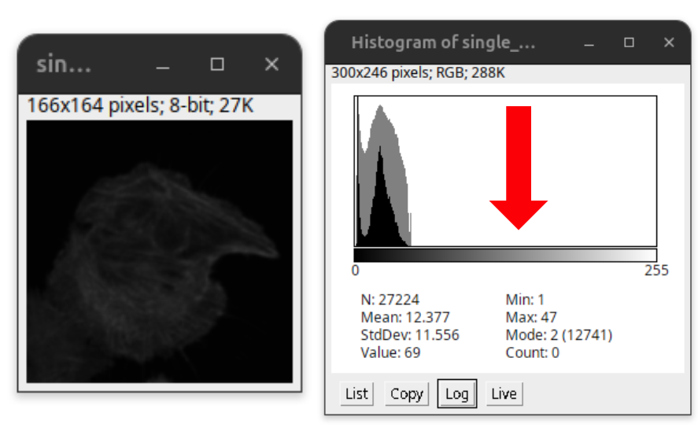
Fig. 95 Low contrast. The full range of the histogram is not utilized.#
Low intensity cut#
The c_image.png (right-click and select “Save Link As…”) now shows a clear intensity sampling error. Unlike the previous example, there is no offset present in the image, and the low intensities have been clipped. At the lowest possible value (0), we can see a sharp peak in the histogram (red arrow). This spike indicates that many pixels have been pushed down to the same minimum value, meaning the true low-intensity information has been lost and cannot be recovered.
This can severely impact image measurements. When measuring object size, dim edges or faint structures near the clipping point may be missed entirely, leading to underestimated object size. Signal intensity measurements are also affected, since clipped pixels no longer reflect their true value, biasing any quantification that relies on them.

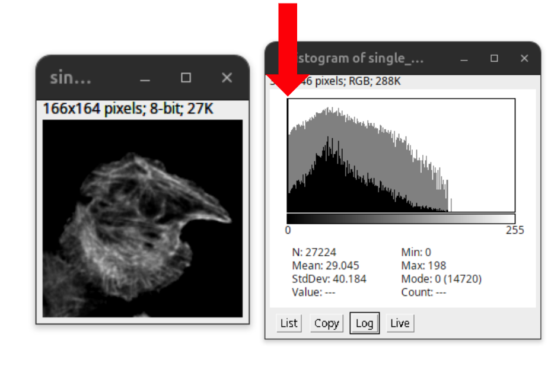
Fig. 96 Low intensity values cut, no offset. Note the peak at the lowest gray value, indicating that the low signal is pushed down to the same minimum value.#
High intensity clipped#
The d_image.png (right-click and select “Save Link As…”) shows another clear intensity sampling error. Here, the high signals have been clipped, also referred to as oversaturation. At the highest possible value, we can see a sharp peak in the histogram (red arrow). Many pixels have been pushed up to the same maximum value, so the true high-intensity values are lost and cannot be measured accurately.
This severely impacts the resolution of different structures, since details in the image are now merging together. Accurate signal intensity measurements become entirely impossible.

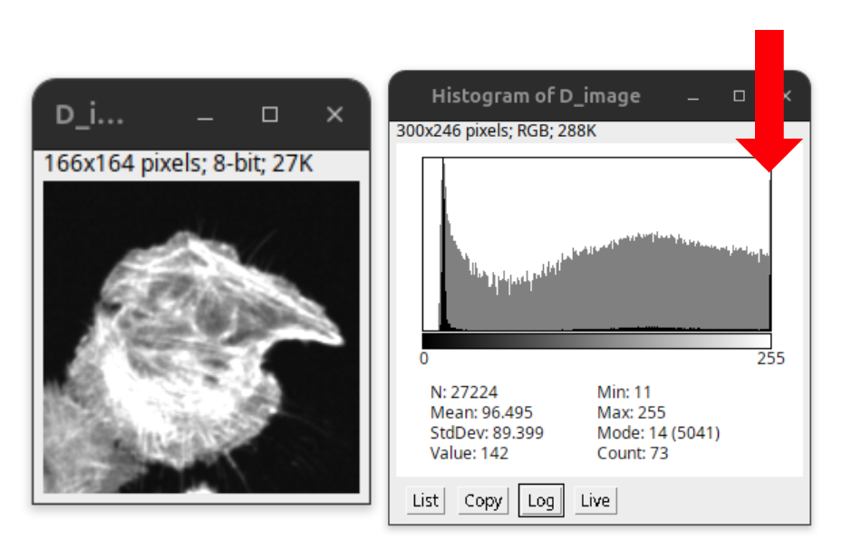
Fig. 97 High intensity values cut, i.e., clipped. The image is oversaturated. Note the peak at the highest gray value, indicating that the high signal is pushed to the same maximum value.#
Note
For an effective image visualization, it might be required to oversaturate the image, as otherwise the image content might not be visible in the medium of visualization (projector, computer screen, or printed paper).
This is permissible for display of images as long as ethical image processing is respected (see Ethical image processing). However, such images are in general not useful for downstream quantitative analysis. Thus, quantitative image analysis should be performed on the original, unprocessed image.
Histogram rescaled#
The e_image.png (right-click and select “Save Link As…”) finally shows an image processing artifact. The intensity has been rescaled such that the continuity of the intensity distribution is interrupted. Instead of a continuous histogram, we see gaps or comb-like spikes at regular intervals, where certain intensity values are missing or overrepresented. This pattern indicates that the image has been resampled or converted (e.g., to a lower bit depth) after acquisition, rather than reflecting the original measurement.
As with the previous examples, this makes accurate quantitative comparison unreliable, since the recorded values no longer correspond directly to the original signal.

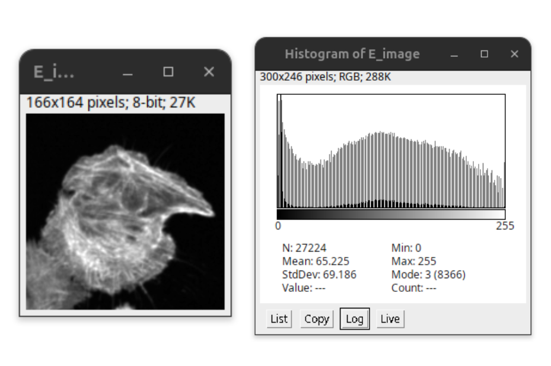
Fig. 98 Histogram rescaled non-continuous intensity distribution.#
Solution#
Fig. 99 Images demonstrating different intensity sampling errors. (a) The starting image, an F-actin cytoskeleton stain channel of a cell cluster. (b) Low contrast image. (c) Low intensities cut off. (d) Oversaturated image with high intensities clipped. (e) Histogram resampled.#